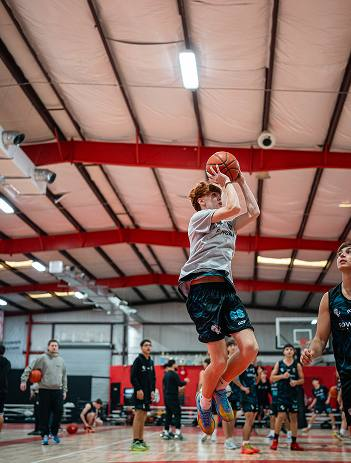
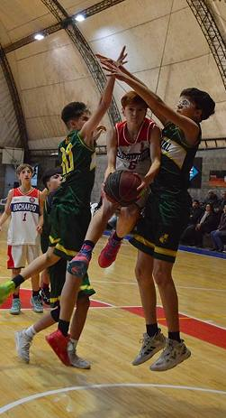
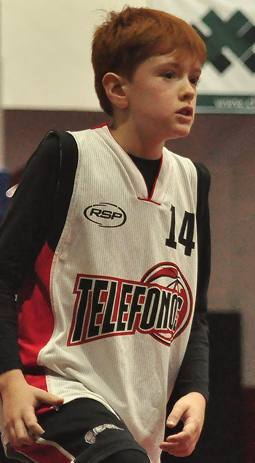
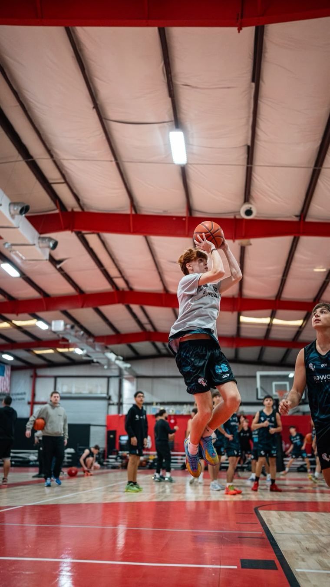
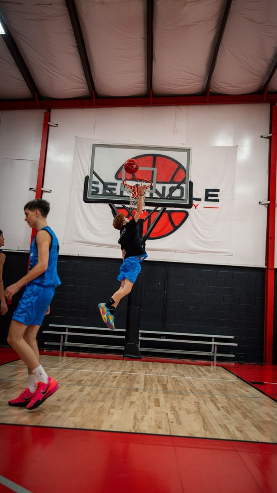
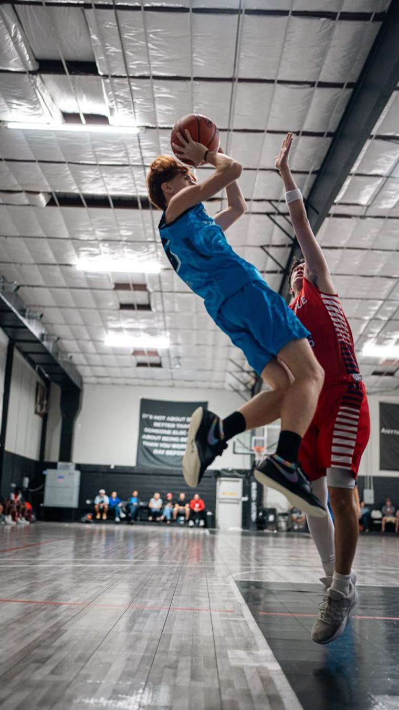
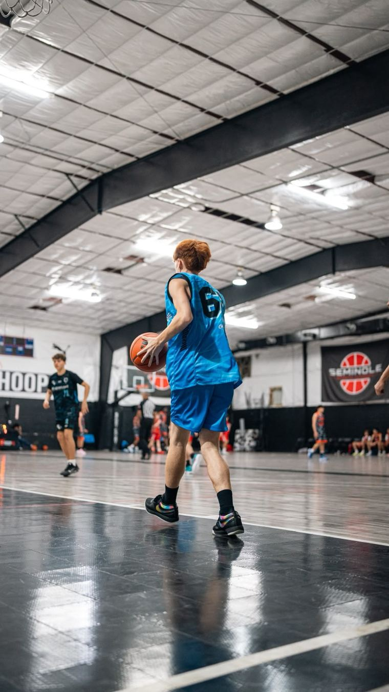
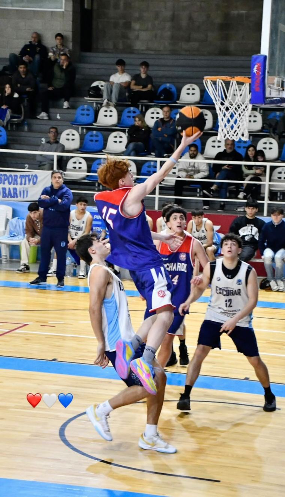
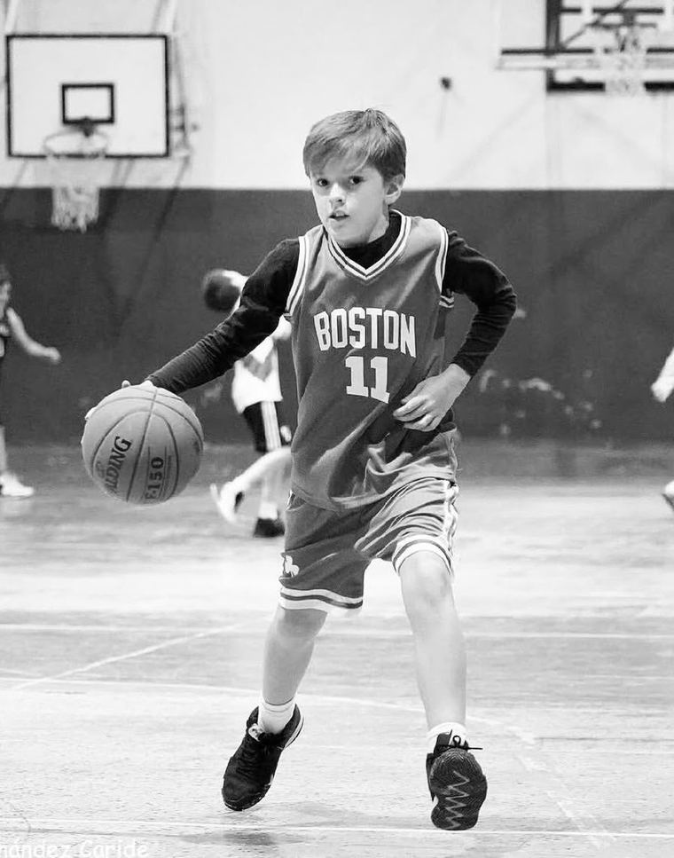

Club Telefonos
hasta los 11 años
Era chico y solo se contaban los puntos. Lo demás no se anotaba, pero se jugaba igual.
PortfolioLeón Trangone18 años
Juego desde los 5 años. Esta es la historia de una pasión que empezó de chico y que todavía no suelto.
ScrollTenía 5 años cuando agarré una pelota de básquet por primera vez y no la solté más. Crecí entre entrenamientos, vestuarios y partidos de fin de semana. No soy el mejor de la cancha y nunca me hizo falta serlo: lo que me atrapó fue el juego. Aprender, equivocarme, volver a intentar y hacerlo siempre con otros al lado.

Entrenar cuando nadie mira.


Y lo que sigue también se juega.
Aparecer todos los días, incluso cuando no hay ganas.
Nada se gana solo. Se aprende a pasar la pelota y a confiar.
Un lugar al que pertenecer, con gente que te espera.
Lo que se ve el sábado se construye durante la semana.
Después de perder, volver a la cancha y probar de nuevo.
Es el número que llevo en la espalda. Cada vez que me pongo la camiseta sé a qué vengo: a jugar, a darlo todo y a hacerlo junto a mis compañeros.
Los promedios fueron creciendo año a año. Algunos son aproximados porque, cuando era chico, casi no se llevaban estadísticas.
Puntos por partido, aproximados
hasta los 11 años
Era chico y solo se contaban los puntos. Lo demás no se anotaba, pero se jugaba igual.
a los 13 años
24 partidos en todo el año. Mi primera vez con estadísticas completas.
desde 2023
Promedios por temporada desde que volví al básquet.
Algunos momentos que me quedaron: entrenando, jugando y también de cuando todo empezó.






Gracias por recorrer mi historia. Esto es lo que me mueve desde los 5 años.